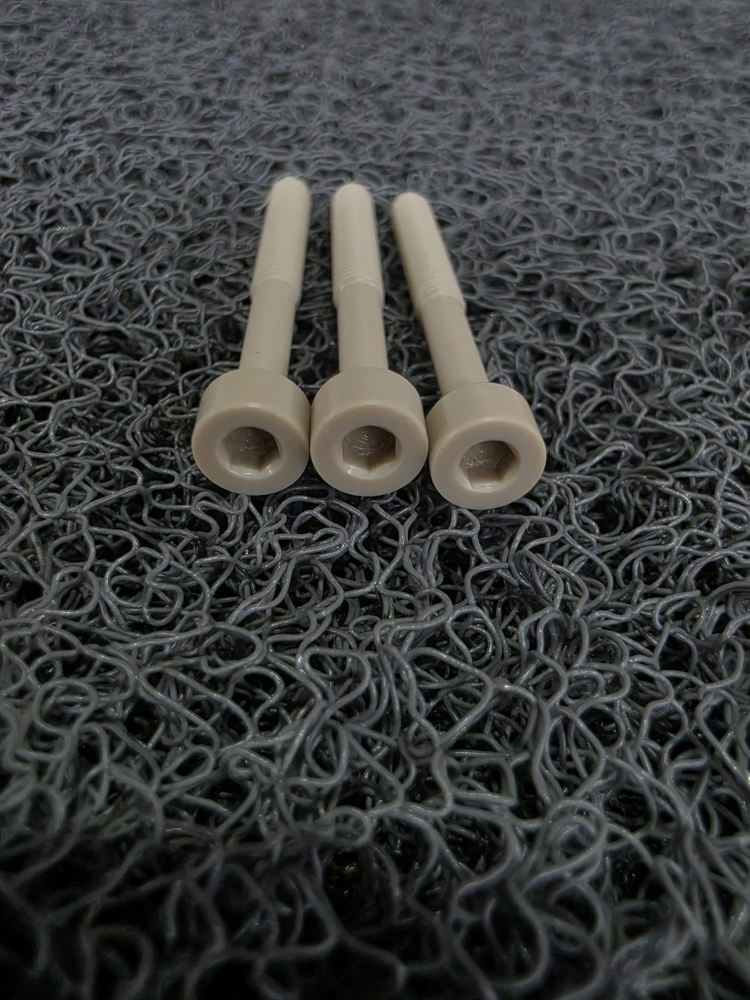
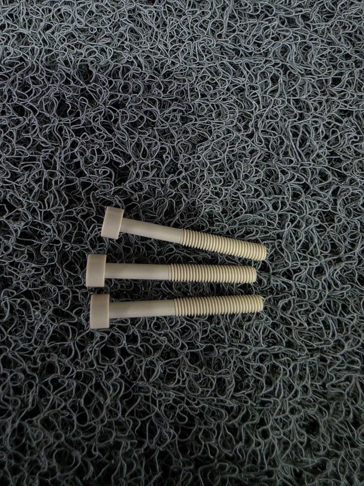
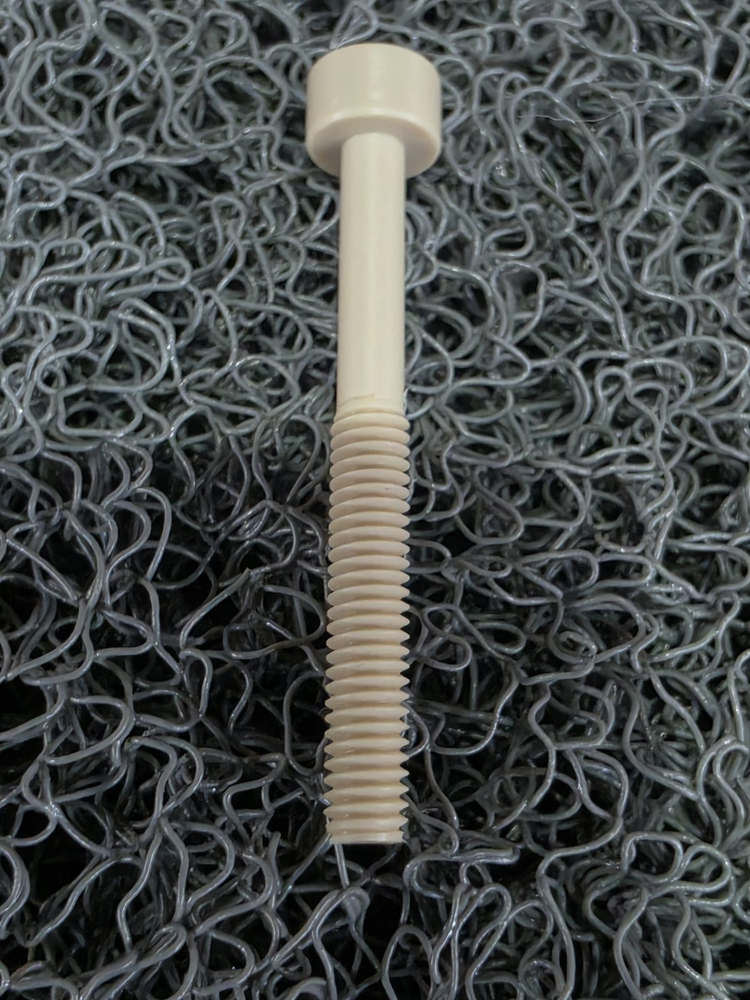
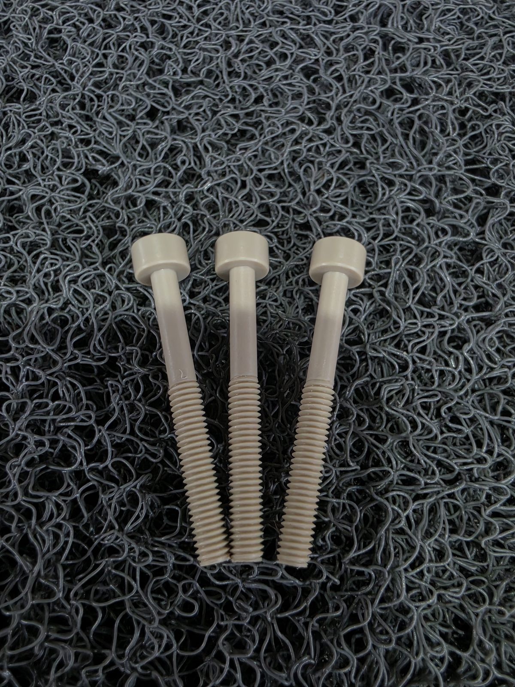
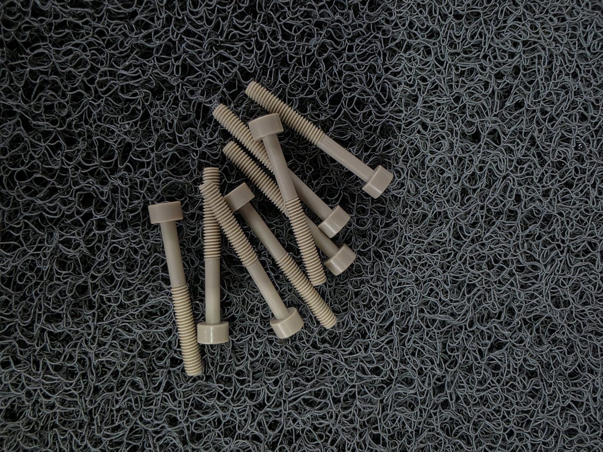

M5x35L PEEK 육각렌치볼트, 직접 가공한 실물입니다
아래 사진은 실제로 저희가 가공한 M5x35L PEEK 육각렌치볼트입니다. 표준 소켓헤드캡스크류 형상 그대로 육각 렌치홈과 나사산을 절삭 가공했습니다.





M5x35L PEEK 육각렌치볼트 — 렌치홈 클로즈업 / 측면 나사산 / 나사산 클로즈업 / 3개 정렬 / 생산 실물
지금 찾는 볼트 사이즈, 아래에서 30초 만에 견적 요청하십시오.
간편 견적 폼 바로가기 ↓왜 M5 볼트인데 규격 유통사에는 없을까
비금속 볼트를 파는 회사는 많습니다. 저희는 비금속 볼트를 파는 회사가 아니라, 규격에 없는 사이즈를 현품 기준으로 직접 깎아드리는 회사에 가깝습니다. 삼성SDI·SK하이닉스·LG디스플레이 같은 반도체·디스플레이 라인은 물론, HPC·SBB 장비 계열의 비자성·절연 체결부에도 이 M5x35L PEEK 볼트가 실제로 들어갑니다. 표준 재고에 없는 길이 때문에 발주가 막히는 상황을 자주 봐왔습니다.
PEEK 볼트, 언제 금속 대신 씁니까
| 구분 | 금속(SUS) 볼트 | PEEK 볼트 |
|---|---|---|
| 전도성 | 전도체 — 절연 필요 부위 부적합 | 절연체 — 전장·센서 인근 체결 가능 |
| 자성 | 일부 자성 잔류 가능 | 비자성 — 반도체 클린룸·계측 설비 적합 |
| 내약품성 | 부식 환경에서 취약 | 산·알칼리 대부분에 안정적 |
| 내열 | 고온에서도 강도 유지 | 약 250℃ 내외까지 물성 유지 |
모든 자리에 PEEK가 정답은 아닙니다. 순수 체결 강도만 필요하고 절연·비자성·내약품 요구가 없다면 금속 볼트가 단가·강도 면에서 더 유리할 수 있습니다.
사용 환경(온도·화학물질·절연 여부)만 알려주시면 PEEK가 맞는 소재인지 바로 확인해드립니다.
간편 견적 폼 바로가기 ↓비규격 M5 볼트 주문 전 확인할 것
발주 전 30초 체크 — 지금 찾고 있는 볼트 사이즈를 규격 유통사에 먼저 물어보십시오. "이 길이 재고 있나요?" 없다는 답이 오면, 다음 질문은 "수입해야 하나요"가 아니라 "국내에서 비규격으로 가공할 수 있나요"여야 합니다.
자주 묻는 질문
현품 사진과 치수를 받아 비규격 볼트를 도면화하는 작업은 건마다 직접 실측·검토가 필요해, 월 단위로 받을 수 있는 신규 비규격 건수를 제한하고 있습니다. 단, 이미 규격품으로 해결되는 사이즈라면 이 과정 자체가 필요 없습니다 — 꼭 KTN이 아니어도 됩니다.
간편 견적 요청
규격·수량·사용 환경만 남겨주시면 확인 후 연락드립니다. 제출 내용은 담당자 이메일로 바로 전달됩니다.
지금 찾는 그 사이즈, 현품 사진만 보내주십시오
규격 유통사에 없는 볼트 사이즈와 소재를 알려주시면
비규격 가공 가능 여부를 무료로 확인해드립니다.